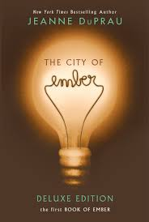
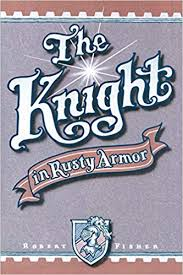
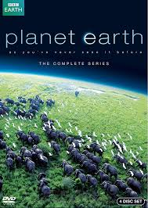
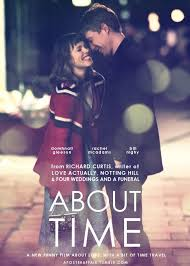

|
Outside of classes or jobs, I (like most people) enjoy glancing
at a good book or breezing thorugh an thrilling movie
wether its for increasing my general knowledge or for pure entertainment reasons.
Books
I cant say that I read one book per week or month like most "readers",
but that is probably because I'm a picky reader and it takes me a while to
find a book that I can enjoy. But what I can say is that, if I find a good
book, that I may read it countless times. And luckily for me I have found a
few of those books and I also had the time and will to read them time and again,
each time reading as if it were one I hadn't read before.
I am not one to usually borrow books from other people or from the library.
If I like a book and find it useful or entertaining I like to have a copy to hand for
reference and re-reading (as I mentioned above). I also love to keep my books clean,
meaning i dont like writing or underlining on anypart of the book, and this not
for a good re-sale value or anytihng, I just like it that way.
I mostly recommend the books to my friends and acquaintances, so i thought
why not share it with the people who came all this way. I hope i can expand this
list in the future but for now, here are the top 3 books I've read.
| 1st in a series of four |
Really Moving |
For self-improvement |
Movies
When it comes to movies though, I am a huge fan. I can say here that I watch a movie
every day. I especially like comedy and action movies, and I wouldn't say no to
sci-fi movies either. But I can't stand horror movies and not because they're scary
or something but because I can't seem to find the point. I also enjoy documentaries
and animations as well. I don't know if it is just me, but i feel like the quality of
the movies coming out are gradually decreasing and becoming to much of a cliché, which
has led me to watching more TV shows instead.
Whenever I get some free time I'm not one to refrain from enjoying a good movie or
watching a cool documentary. And when it comes to movies, I'm not as picky as I am
towards books. So to list my recommendations here would be a huge handfull. So once
again I will leave you with my top 3 movies and TV shows.
| A great Documentary |
Very Entertaining |
 Informative and Funny Informative and Funny |
|
|
|